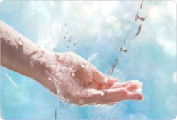
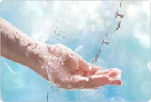

Все знают о том, что наша жизнь невозможна без воды. Вода – это основа нашей жизни, важный элемент в создании крепкого здоровья и красоты каждого человека. По этой причине мы стараемся употреблять как можно более полезную и натуральную питьевую воду. Наверняка многие из нас задумывались: «Какой же на самом деле является «чистая» вода? Как производители отличают питьевую воду от воды, не пригодной для питья? Питьевая вода в Перми - как выбрать?»
Основными нормативами предусмотрено разделение пригодной для питья воды на несколько категорий – первую и высшую и воду централизованного водоснабжения. Вода всех категорий безопасна и безвредна. Вода централизованного водоснабжения – это водопроводная вода в районах с благоприятной экологической обстановкой, которую модно пить прямо из-под крана. Вода первой и высшей категории – это вода природная, добытая из самостоятельных, подземных, предпочтительно родниковых или артезианских, источников, надежно защищенных от биологического и химического загрязнения. Вода высшей категории является более обогащенной минералами и солями, из-за чего она может оставлять осадок при кипячении.
Основными критериями при выборе питьевой воды в магазинах Перми - это ее эстетические свойства, или же, по-простому – вкус, запах воды. Здесь проверку качества можете провести Вы сами. Чистая, натуральная артезианская вода обладает приятными вкусовыми качествами, немного горчит и не имеет запаха. Производители также оценивают воду по таким показателям, как цветность и мутность – у качественной воды они также отсутствуют. Качественная вода обладает нейтральным pH, в пределах от 6,5 до 8,5. Эстетические показатели воды определяет количество ее основных солевых компонентов – хлоридов, сульфатов и фосфатов. Благодаря их содержанию в воде, Вы легко и быстро утолите свою жажду природной водой, дистиллированной водой напиться нельзя, она плохо утоляет жажду.
Санитарными правилами и нормами, которых придерживаются производители, оговорено предельно допустимое количество вредных токсичных веществ, содержащихся в воде. Это гарантирует нам то, что в воде не будет содержаться силикатов, нитратов, цианидов, всевозможных токсичных металлов и неметаллов. Питьевая вода, приобретаемая в киосках Перми, в соответствии с нормами, не должна содержать галогенов и различных показателей органического загрязнения.
Один из важных свойств воды – это ее жесткость. Высокая жесткость пермской воды – это проблема, обусловленная природными факторами. Жесткость воды обусловлена содержанием в ней катионов кальция и магния. При нагревании они образуют осадок. Высокая жесткость вредна для здоровья – из-за высокого содержания минералов возрастает вероятность образования камней в организме. Но и полностью дистиллированная вода вредна для организма. Отсутствие микроэлементов вымывает соли и минералы из организма человека, что в первую очередь сказывается на опорно-двигательном аппарате и нервной системе.
Питьевую воду в Перми, которую поставляют на прилавки магазинов и в точки ее разлива, проверяют на радиационную безопасность, а так же на безопасность в эпидемическом отношении (по микробиологическим и паразитологическим показателям).
Поэтому вода, приобретенная у известных и зарекомендовавших себя производителей, абсолютно безопасна для Вашего здоровья, и Вы можете смело употреблять ее в своем рационе.


 
